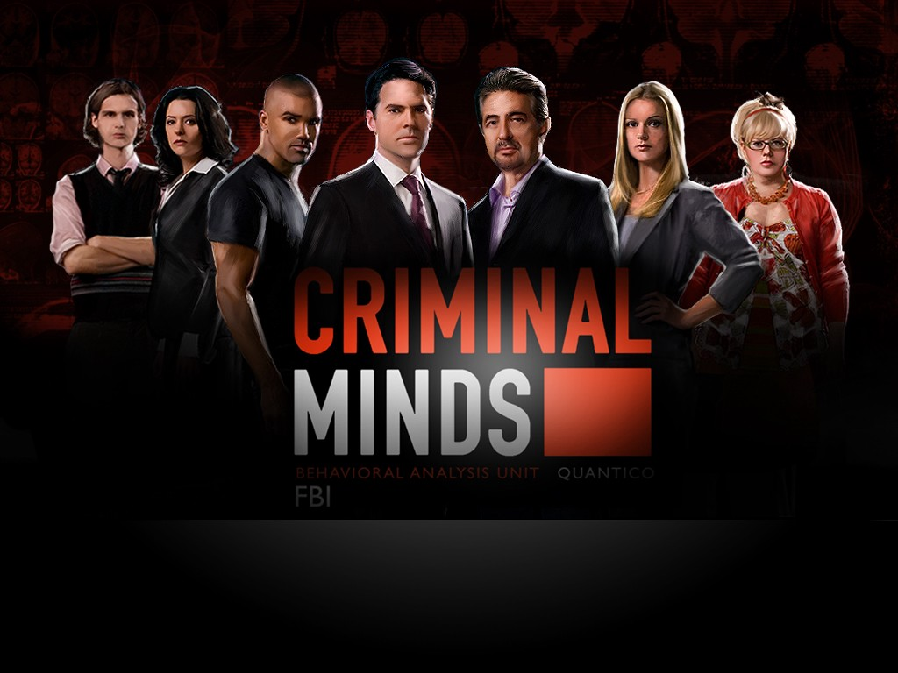
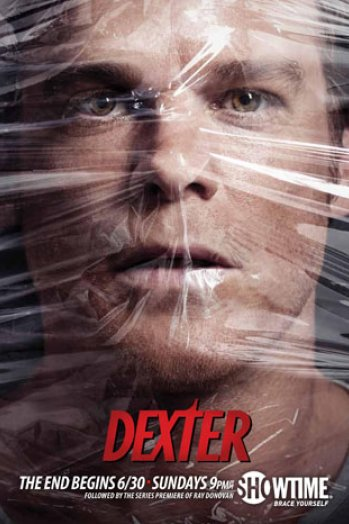
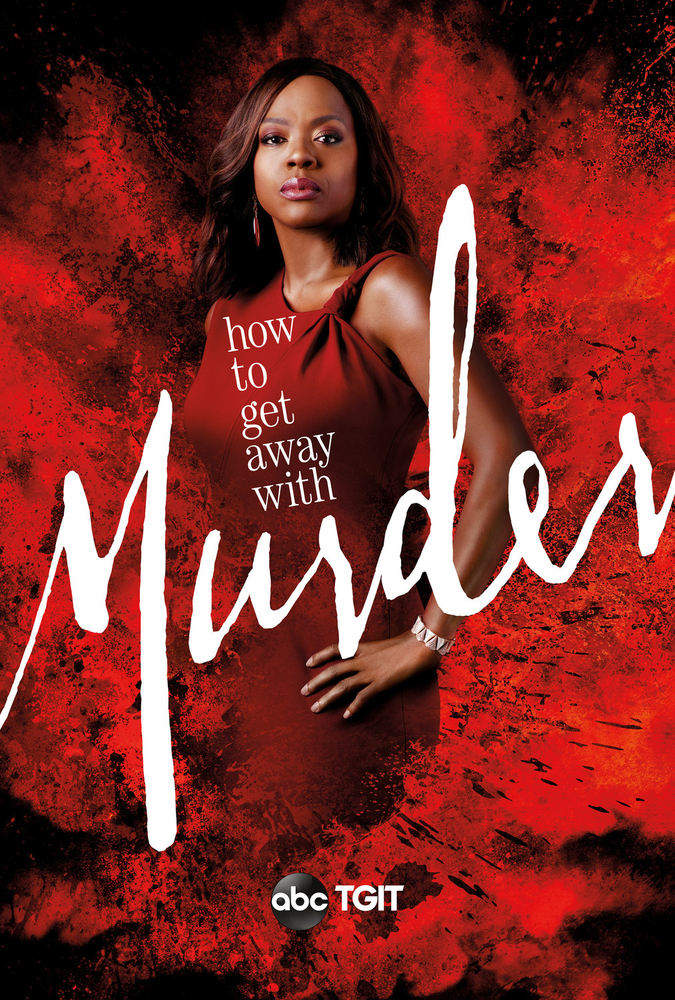

Crime
- Criminal Minds 
- Dexter 
- How to get away with murder 
I used to be OBSESSED with this show a few years ago. Don't get me wrong I still love it so much but not as much now that most of the main characters are no longer in the show.
It revolves around these FBI agents and in every new episode they have to solve a new murder. Throughout the episode it shows little snippets of the killer commiting the crimes and the victims. Also, on the other side you can see the FBI agents in their offices working together to solve the murder and them going to different crime scenes. It is very fascinating. Most of the times in every episode they're able to solve the murders but not all the time. Not very often but sometimes they also include their own personal lives but the show mostly revolves about their work and the murders.
I really enjoyes this show, it was a new refreshing perspective and it was so different. Usually when watching anything crime like television shows or movies you usually see it from the perspective of the police or victims and this show did it from the perspective of the serial killer. It was so interesting to me and very creative for the writers. I think that's one of the biggest reasons why I enjoyed it so much because it was so different.
As I said before this show revolves around a serial killer... His name is Dexter Morgan and he works in basically forensics. When he was a little boy his mother was killed by a group of men in front of his eyes, which scarred him for life. The police man who was in the case took him as one of his own, as his son. Growing up his adoptive father told him he was a sociopath and taught him a "code" to kill bad people that he has followed ever since. He works in day for the police and at night he commits his crimes. The show gets a lot more complex as you progress through the season.
This show is so good and suspensful. It really has a very diverse cast as well. I think as soon as it came out I was hooked on it because of how addicting it is.
The show revolves about a laywer and her students. She picks some of her best students and helps mentor them to become better lawyers and gives them cases to represent so they can get more experience. However, things get a lot more complicated and people become dying some of their own actually. They work as a group to try to get to the bottom of the murders and sometimes the actual killers are themselves. It is very suspensful and every episode keeps you on your feet. It is even more because on the first episode of every season they start of by showing you the murder, the victim and then they go back in time to explain and try to decipher who the killer is.